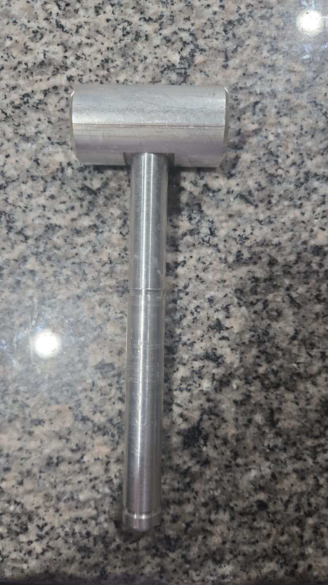
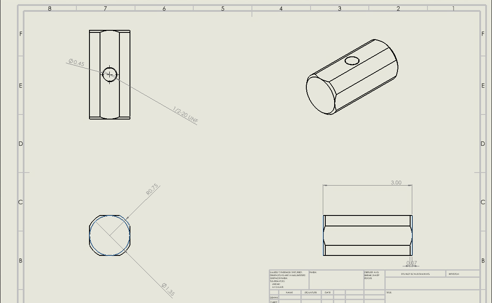
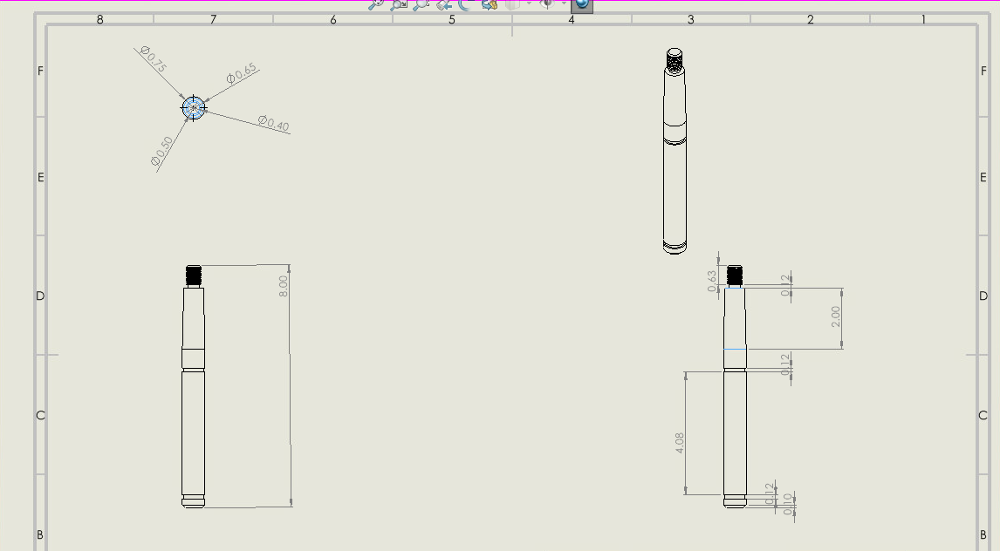
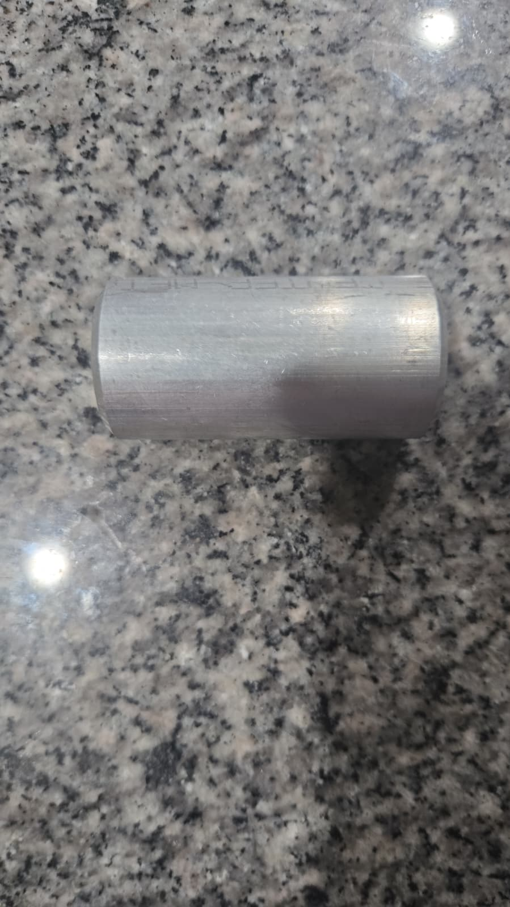
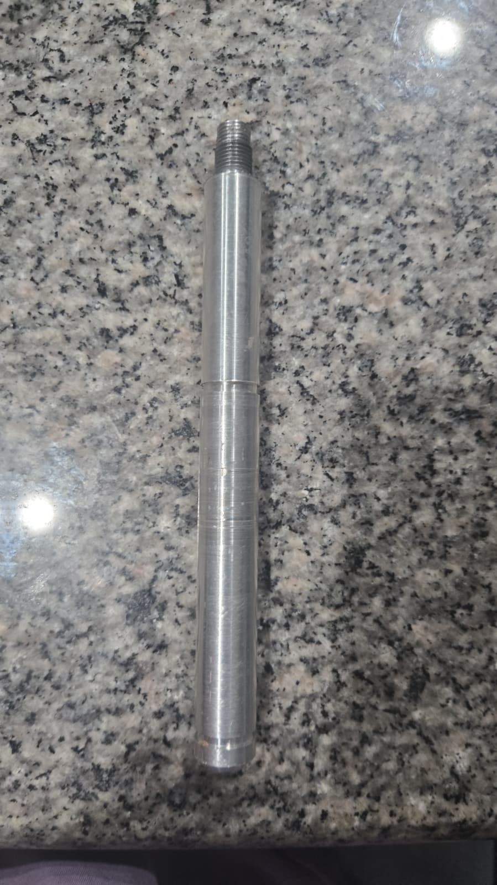

2025 · MANUFACTURING · MACHINING · DESIGN
Aluminum Hammer Fabrication
Designed and fabricated an aluminum hammer using mechanical machining and manufacturing processes.

Overview
Using Aluminum, I was able to manufacture an hammer using a manual mill and lathe. Using the Manual mill I was able to create the hammer head. I created the hole for the handle to be adjusted in and adjusted the head to proper sizing. After, using a lathe, I was able to add bevels to the hammer head and add any details to the hammer's handle. Then finally used the lathe again to create the threads inside the hammer head's hole and on the handle. To make the hammer more presentable, I also sand blasted it to make it smoother.
Design
The hammer geometry was developed using mechanical CAD and prepared for manufacturing.


Machining
Machining processes were used to manufacture the hammer from aluminum stock.
Final Product
The completed component demonstrated the transition from CAD design to a physical manufactured part.

